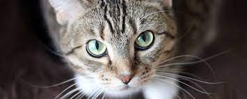

Gatinhos miau miau é uma empresa de gatos para gatos porém agora é outra empresa com Uno no final para ser bonito
A primeira associação dos gatos com os humanos da qual se tem evidência ocorreu há cerca de 9 500 anos,[7][8] período mais antigo ao estimado anteriormente, que oscilava entre 3 500 e 8 000 anos. A subfamília Felinae, que agrupa os gatos domésticos, surgiu há cerca de 12 milhões de anos, expandindo-se a partir da África subsariana até alcançar as terras do atual Egito.[9] Acredita-se que o gato-selvagem-africano (Felis silvestris lybica) era seu antepassado imediato.[10] Adicionalmente, evidências genéticas assinalam que os gatos domésticos atuais partilham uma procedência direta com os gatos selvagens do Oriente Médio.
caso precise de videos de gatinhos clique no gato
